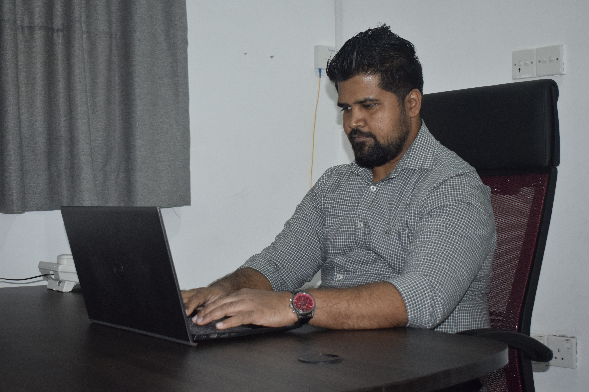

Explore the latest trends, strategies, and best practices in SEO, WordPress development, and AI-powered optimization.

Lead SEO Specialist & WordPress Developer with 5+ years of experience helping Sri Lankan businesses achieve digital success through data-driven strategies and AI-powered optimization.